1. Atomic Design Introduction 原子設計理論簡介
1.1 Introduction 背景介紹
於2013年Brad Forst提出此設計概念：
靈感來自於他高中時期的化學實驗室，可以用肉眼看到的物體都是由原子(Atoms)組成，原子結合在一起形成分子(Molecures)，分子組合成相對更複雜的組織(Organisms)。於是Brad藉此概念應用在介面設計。
Interfaces are made up of smaller components 介面是由許多元素所組成的。
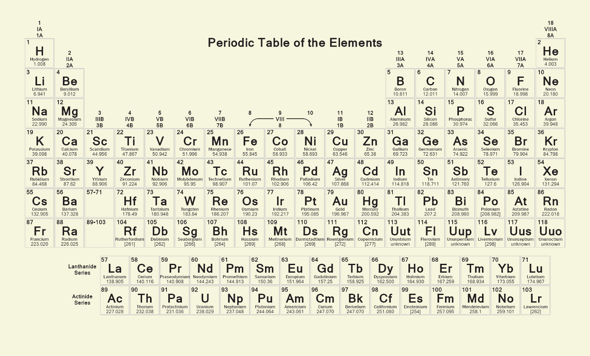
圖1.1 還記得高中化學元素週期表嗎？Brad Forst認為網頁也是由小元素所組成
1.2 定義 Definition
原子設計是一個設計方法論，由五種不同的階段組合，創建一個有層次、計畫性的介面系統。
此五種階段為：
- Atoms 原子：為網頁構成的基本元素，HTML的tags，例如標籤、輸入，或是一個按鈕，也可以為抽象的概念，例如字體、色調等。
- Molecules 分子：由元素構成的簡單UI物件
- Organisms 組織：相對分子而言，較為複雜的構成物，由原子及分子所組成。
- Templates 模板：以頁面為基礎的架構，將以上元素進行排版
- Pages 頁面：將實際內容（圖片、文章等）套件在特定模板
以下我利用中華郵政網頁為例說明Atomic Design：
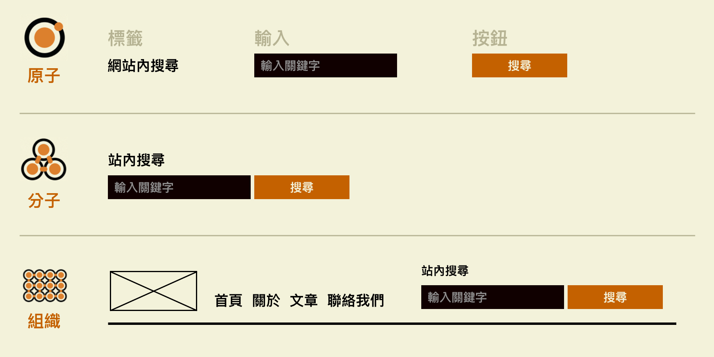
圖1.2.1 原子為網頁構成的基本元素，組織是分子及原子集合的元件
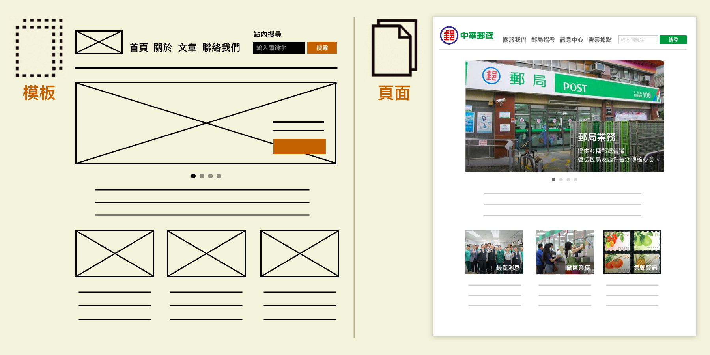
圖1.2.2 以中華郵政網頁為例，說明模板可以套用在不同主題
1.3 優點 Benefits
- Consistency 一致性：由於分解網站成單一元素，不論在哪一個頁面，UI元素的互動性是相同的，例如顏色變化、字體的排序、以及回饋。不但讓使用者經驗相同，在視覺上更為和諧。
- Efficiency 效率：由於建立了Pattern Library元件庫，一旦要更改某一個元素，可以馬上施行、應用。
- Collaboration 跨部門的共通語言：不僅方便設計師思考頁面的和諧性，也可以讓工程師、品質檢驗清楚頁面的邏輯架構及變化，減少不必要的來回溝通
1.4 批評 Criticism
目前個人想到的唯一缺點是，一旦有了先入為主的架構，可能會跳脫不了系統性的方法，而喪失了創意發想的機會。
2. Case Study: FEVO Event Page Redesign 實例：改善FEVO活動網頁
2.1 Problem Statement 問題定義
FEVO其中主要業務為協助客戶銷售票務，因此我們有一個default的活動頁面，客戶提供活動資訊及促銷機制，消費者即可上網購票。
2.1.1 Customer needs 客戶需求
客戶希望可以根據他們的品牌，設計客製化的網頁。
2.1.2 Project Timeline 設計時程
4/4 – 4/7 ，大約一週的時間
2.1.3 Current design 目前頁面設計
基本的活動頁面包含活動名稱、票價、介紹、圖片/影片、按鈕、促銷活動等資訊。左方是網頁版，右方是手機版。
優點：簡潔的頁面，呈現所有重要資訊，使用者一看即可理解此頁面目的。
缺點：以設計角度而言，
- UI的回饋方式不一致：易造成使用者經驗混亂，增長認知時間
- 重點(購票)不明顯：按鈕在視覺上與促銷優惠的黑色一致，並沒有跳出畫面，易造成使用者不知道該把重點放哪，而減低了銷售的機會。
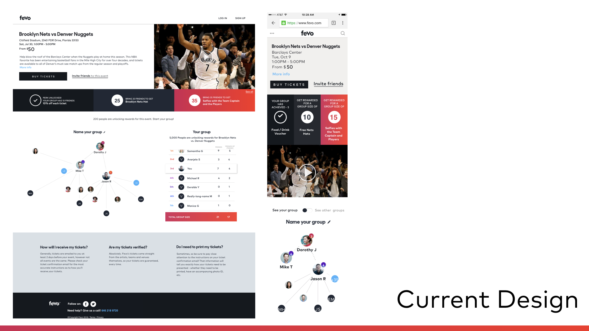
圖2.1.1 目前活動頁面，簡潔的排版，但由於重點過多，讓使用者不知該把目光放哪
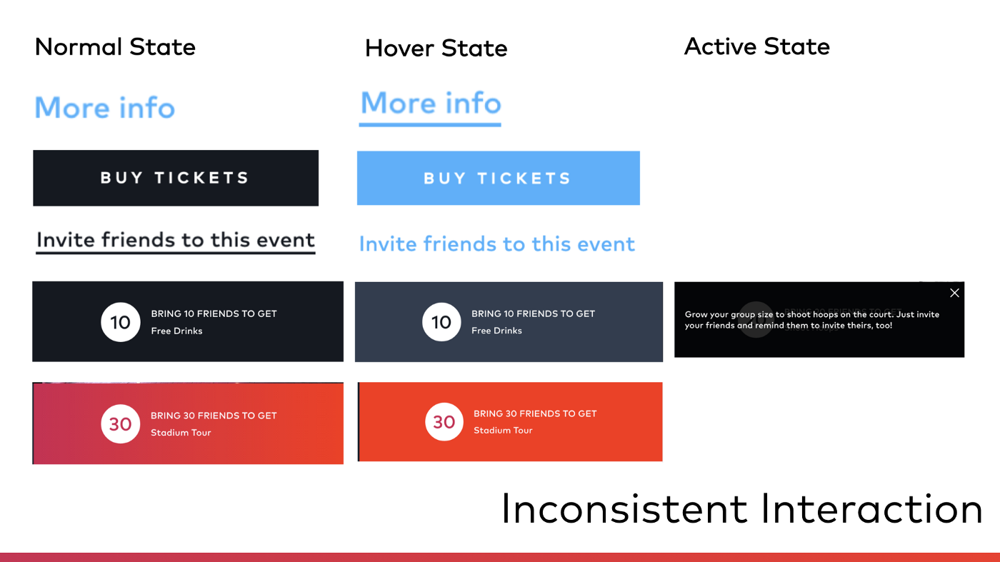
圖2.1.2 目前設計的UI互動機制並不一致，容易造成使用者認知混亂
2.2 Design Process 設計過程
2.2.1 Understand business goals 理解商業目的
首先，我們必須瞭解客戶最主要的目的，也就是賺錢！！！因此，如何讓終端消費者購票，為首要考量。再來，先前提到客戶需求，他們希望活動網頁與品牌風格一致。
了解目的後，再進行設計，才能將商業與設計更順暢的結合，客戶更容易被說服、買單。由於產品是要賺錢的，因此此案例著重於商業與設計的結合，假如是較偏向創意發想的計畫，此設計過程請斟酌參考。
2.2.2 Know limitations 瞭解設計限制
設計限制主要是考量到預算、時間、資源分配，是設計過程十分重要的步驟。事前詢問產品經理在此頁面可以更動的元素是什麼，以及工程師的技術限制，有助於更有效率的設計。
在此案例中，儘管產品經理跟我說，我可以大改、突發奇想都沒問題。但個人以產品開發時間及資源為主要考量，且此計畫的急迫性、重要性影響並不大。因此，如何用最少資源達到目的最佳化，減少開發成本，讓客戶滿意為設計目的。
2.2.3 Decompose the interface 分解介面
在了解目的及限制後，我開始分解介面成兩大方向：
UI元素：字型、按鈕、連結等，同時考量不同狀態的互動方式(Normal, Hover, Active and Disabled)
功能/資訊重要程度排序：每一個區域所要達成的目的，是否跟客戶目的及需求一致，此分析有助於設計架構
2.2.4 Play around with color 大膽玩色彩
最後一步驟，才是進行設計，也是最開心的部分啦！大膽嘗試不同顏色、排版的組合，其中參考許多網頁的色彩組合，最常使用的靈感發想網頁為Awwwards。
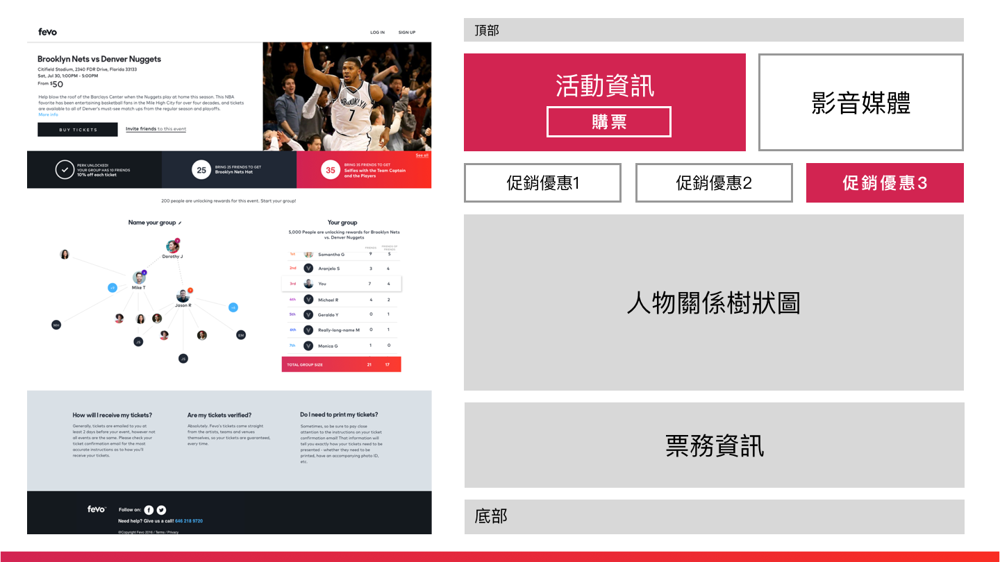
圖2.2 網頁分解圖：將此網頁的功能及目的性，做了重點排序(紅→白→灰)
2.3 Final Design 設計產出
2.3.1 Web Design 網頁設計
首先，我先挑選一個重點顏色（藍色），作為網頁的基底，目的為強調商業目的（購票及促銷重點3），降低其他非重點的元素的視覺份量（較細的字體、將優惠調成淺色等），讓頁面更為簡潔。
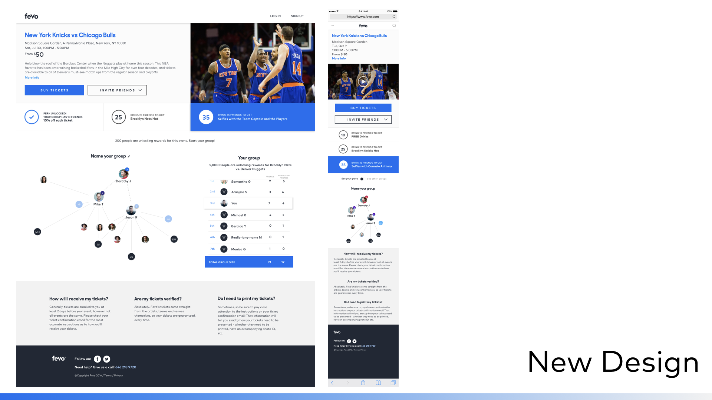
圖2.3.1 Final Design: 用主要顏色強調商業目的的重點，減輕次要元素，讓整個頁面更為簡潔
2.3.2 User Scenarios 使用情境
同時考量到客戶不同的使用情境，根據促銷優惠的數量進行使用情境設計，此步驟能保持各種情境的畫面一致性。
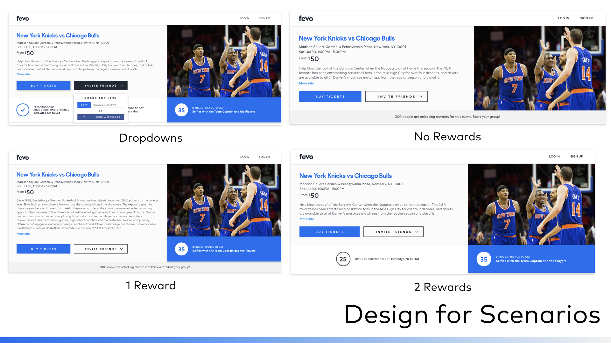
圖2.3.2 根據使用情境做設計，保持畫面的一致性
2.3.3 Mobile Screens 行動裝置
越來越多使用者在行動裝置上購票，因此在手機版的頁面以商業目的為主要考量，保持畫面的簡潔及強調重點。
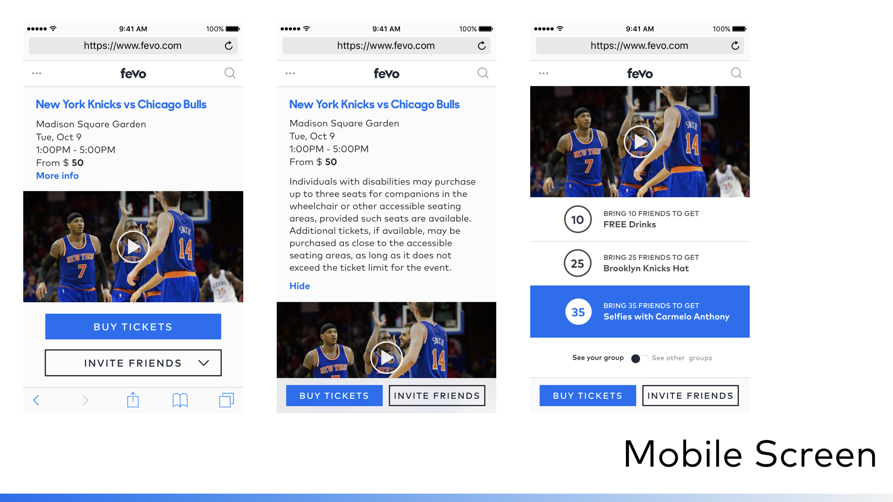
圖2.3.3 由於手機螢幕尺寸限制，更必須清楚此網頁的目的性，進行排版
2.3.4 Pattern Library 素材庫
最讓產品經理驚艷的一點，即是我整理的設計素材庫，包含：
UI基本元件：色彩、按鈕、連結等
使用狀態：Normal, Hover, Active, Disabled
標註基本CSS：讓工程師可以複製貼上，減少不必要的來回溝通
素材庫即是Atomic Design的其中應用，歸納元素。創建素材庫的主要原因為
- 設計及工程的橋樑：可以依據素材庫作為參考，在品質檢測時，也有依據的指標
- 重複利用性：與其設計五種、七種色彩，為何不讓客戶自己選擇符合品牌的顏色，則整個頁面可以因應改變，創造了無限的變化。
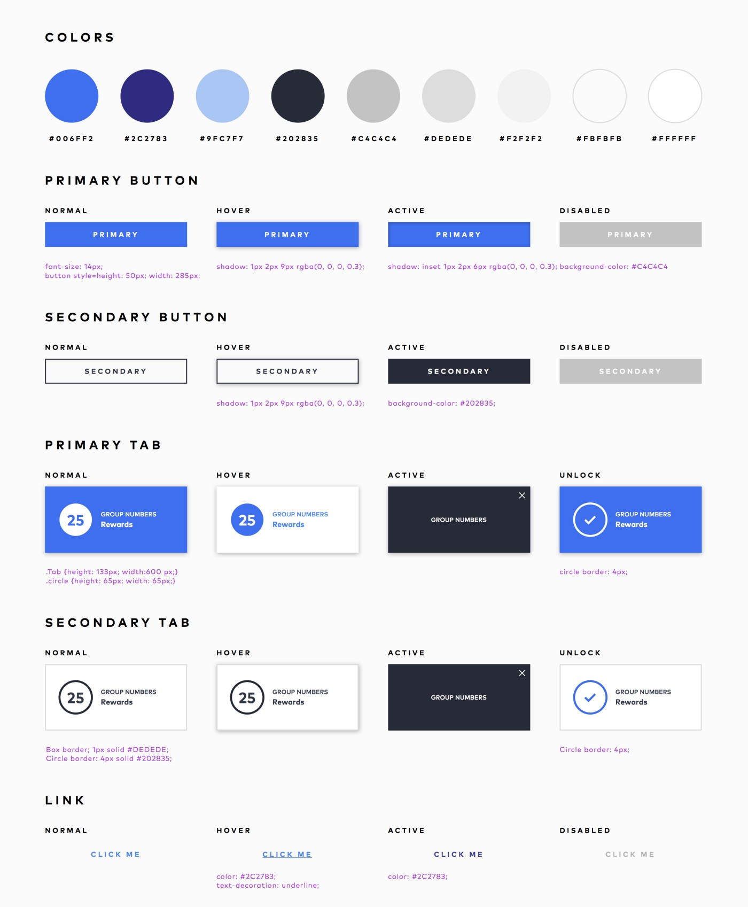
圖2.3.4 Patter Library 素材庫是設計與工程的橋樑，讓產品開發過程更有效率
2.3.5 Templates 模板
由於素材庫將網頁拆解成元素，更方便重複使用、創造不同的視覺效果。最後我設計了四種模板，客戶可以選擇相對的顏色，頁面主要色彩會因應改變，符合品牌形象。
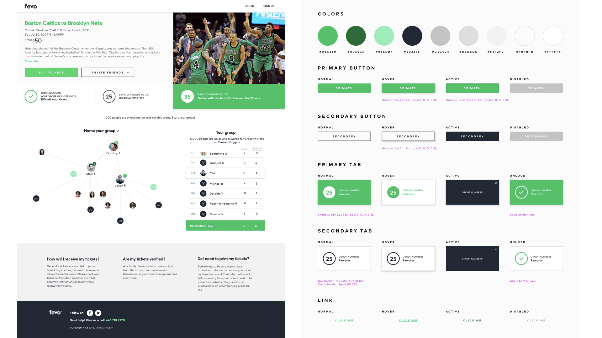
圖2.3.5.1 Modern 現代簡潔版，高濃度的Primary Color，產生有活力、精神的視覺效果
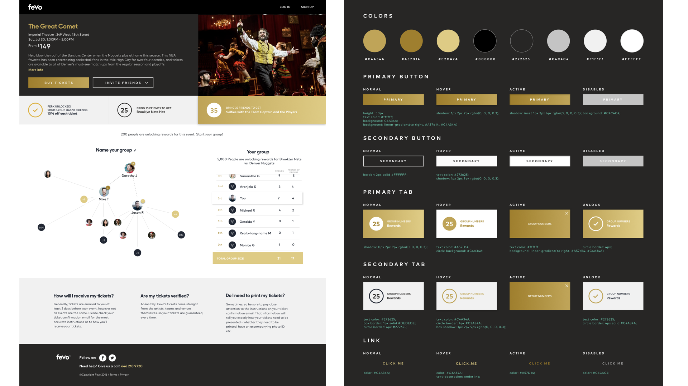
圖2.3.5.2 Royal 深色底創造出高貴的形象，適合百老匯、奢華品牌等
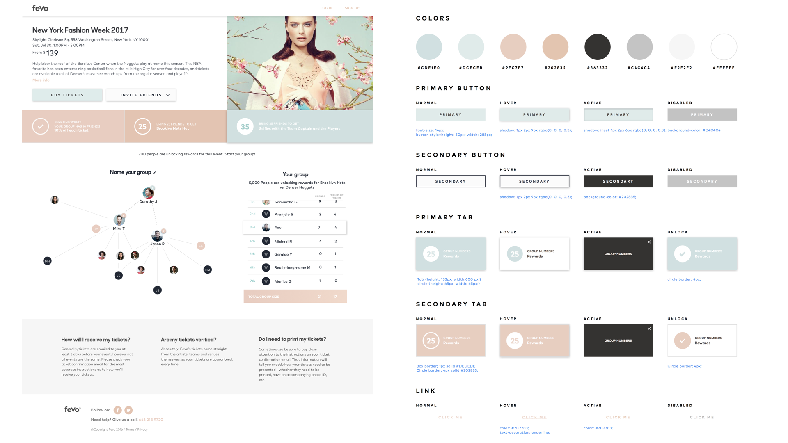
圖2.3.5.3 Spring Breeze 利用女性柔和的顏色搭配，適合婚禮策劃、春夏活動
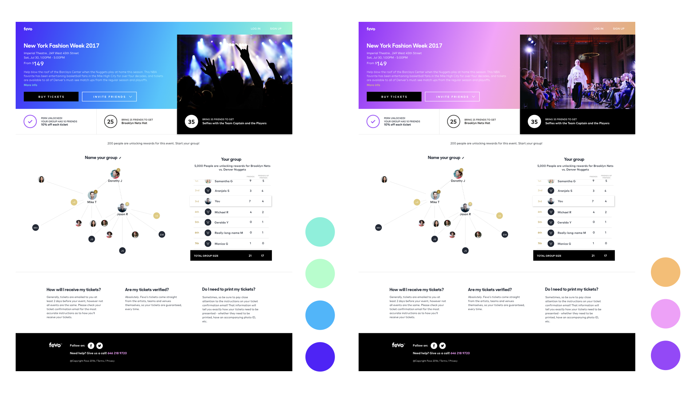
圖2.3.5.4 Vibrant 動感：漸層的背景，圖片與促銷優惠結合，在視覺上更為突顯，適合演唱會、時尚秀等活動類
2.4 Results 成果
重新設計的活動網頁，有以下三個主要效果：
2.4.1 CTA Enhancement：
由於強化了與商業目的相關的重點（購票及促銷優惠），視覺效果上更為突出、吸引使用者的目光
2.4.2 Efficiency/Reusability 效率/重複使用性：
素材庫的創建，讓設計師與工程師的溝通更為順暢，同時可以重複利用元素，做無限的變化
2.4.3 Consistency 設計一致性：
將網頁介面分解成元素，可以應用在不同的頁面，讓消費者有相同的使用者經驗
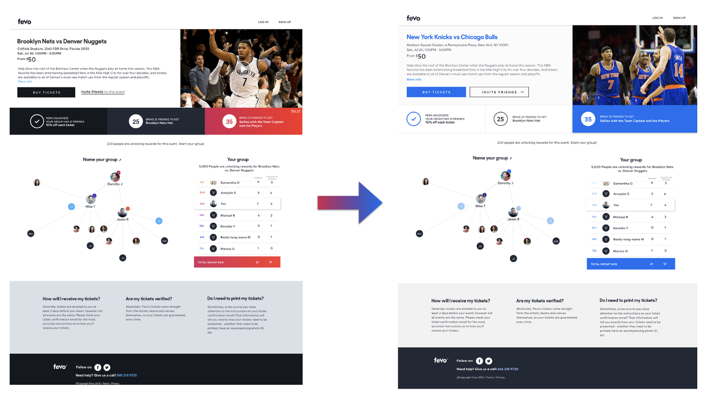
圖2.2 網頁分解圖：將此網頁的功能及目的性，做了重點排序(紅→白→灰)
3. Conclusion 結論
最終呈現設計結果給產品經理以及CEO，他們都十分驚艷滿意，因為我達到了以下目的：
- 達成客戶需求（價值高）
- 容易執行（低開發成本）
- 美觀
- 完整思考不同使用情境：不同螢幕尺寸的設計、優惠次數不同的畫面
References:
-
網頁設計 : Atomic Design簡介及工作實例
uxeastmeetswest
May 1, 2017 · 11 min read
https://medium.com/uxeastmeetswest/%E7%B6%B2%E9%A0%81%E8%A8%AD%E8%A8%88-atomic-design%E7%B0%A1%E4%BB%8B%E5%8F%8A%E5%B7%A5%E4%BD%9C%E5%AF%A6%E4%BE%8B-42e666358d52
-
Atomic Design
http://bradfrost.com/blog/post/atomic-web-design/
http://atomicdesign.bradfrost.com/chapter-2/
-
Slideshare: Atomic design
https://www.slideshare.net/bradfrostweb/atomic-design/4-httpsparkboxgithubcomstyleprototype
-
Vimeo Video: Brad Frost: Atomic Design (Webdagene 2014)
https://vimeo.com/109130093
-
The Unicorn Workflow: Design to Code with Atomic Design Principles and Sketchhttps
https://medium.com/re-write/the-unicorn-workflow-design-to-code-with-atomic-design-principles-and-sketch-8b0fe7d05a37